Équilibre
Documentaire
Synopsis : Pamela partage sa vie entre la ville et la montagne. Pour elle, se mouvoir « entre ciel et terre » n’est pas un passe-temps. Il y a dans ces paysages quelque chose d’essentiel avec lequel elle a besoin de renouer. Dialogue avec soi. Dialogue avec l’environnement. La montagne peut-elle nous aider à retrouver des équilibres perdus ?
Réalisation: Jonas Guyaux / Assistante réalisation : Emma Landet-Lacoste / Avec Pamela Ghislain, Carmen Lonfat, Christophher Stalmans / BO : Peperstreet Project (Jérôme Dejean & Christophe Janssen) / Avec le soutien du Club Alpin Belge Bruxelles Brabant et du camp de base
Séléctionné au Young Filmakers Festival de Bruxelles en 2025
Séléctionné au Festival des Femmes en Montagne de Annecy en 2025
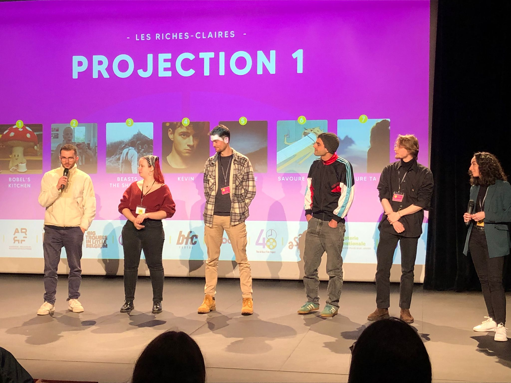
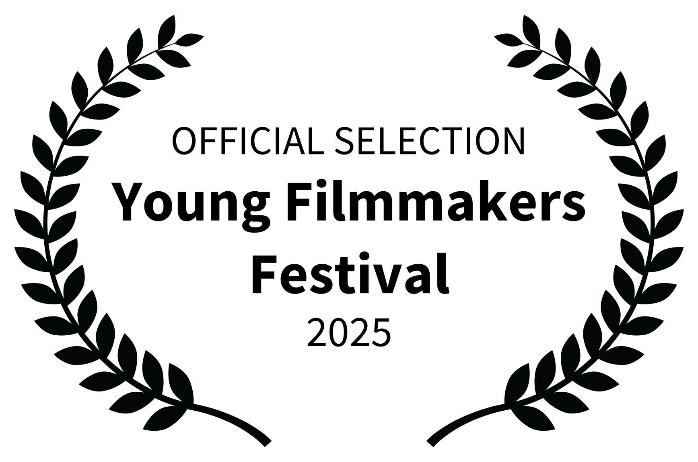
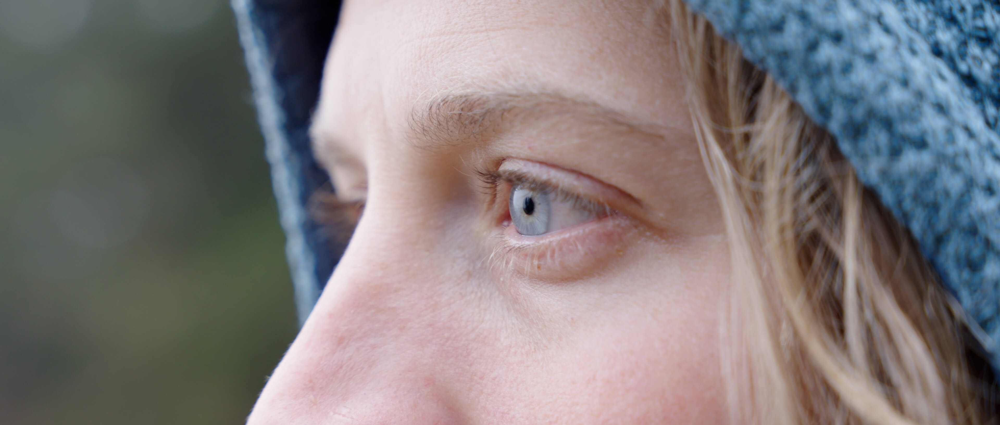
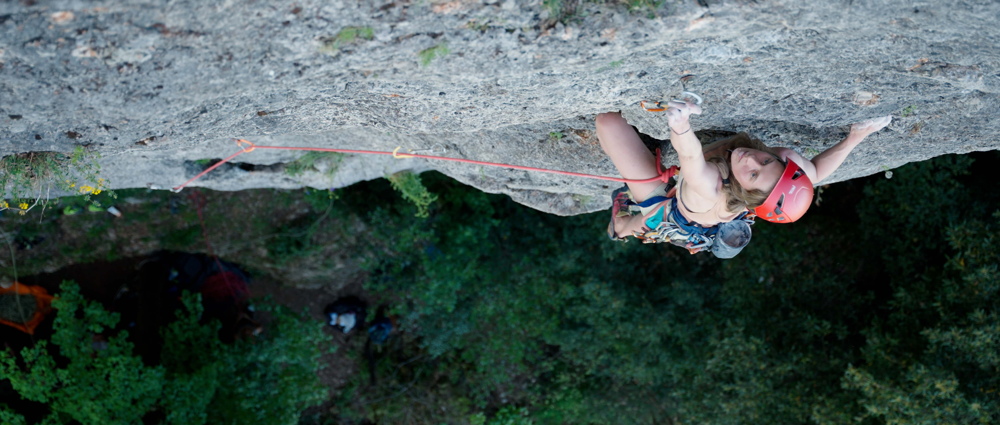
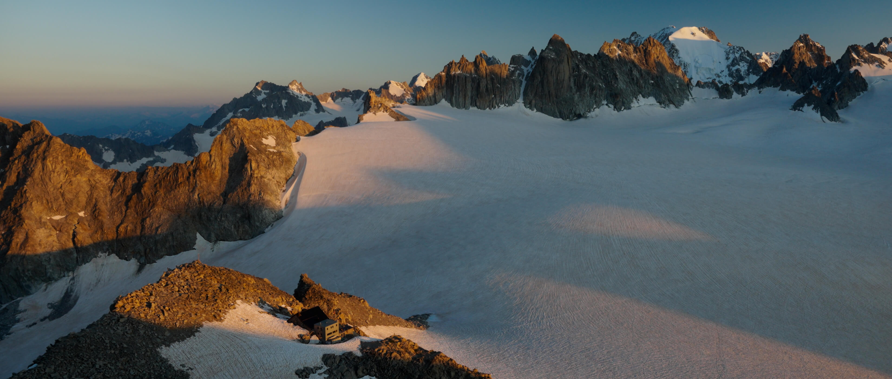
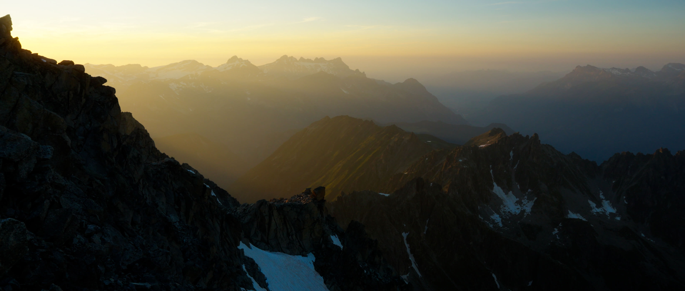
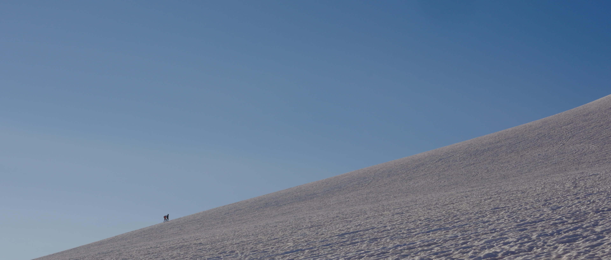
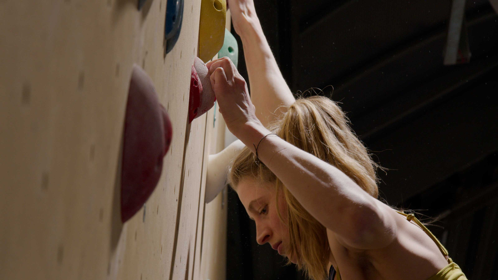
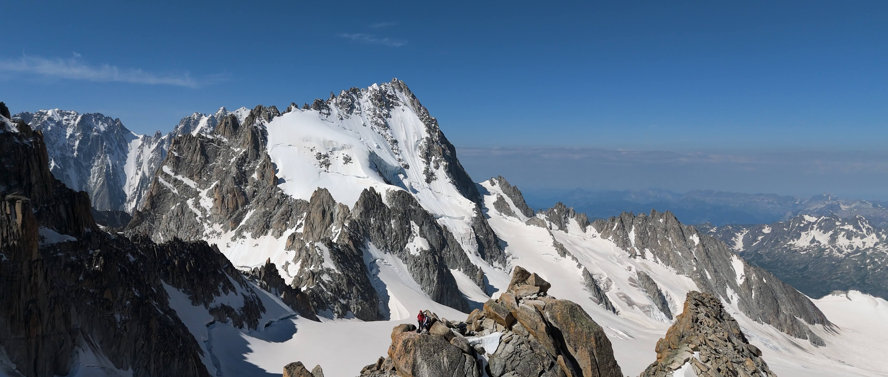
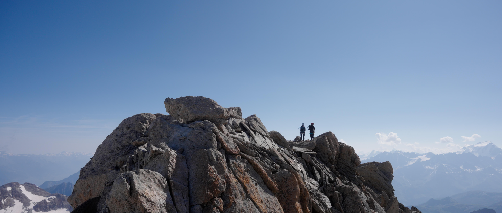
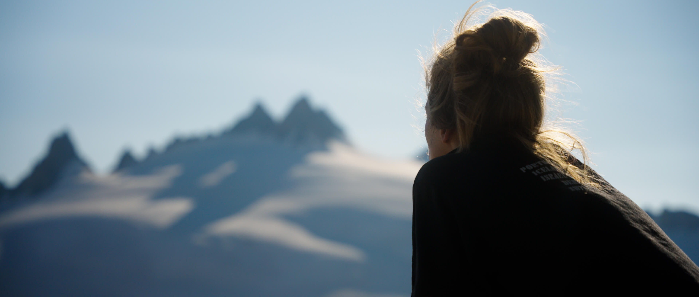
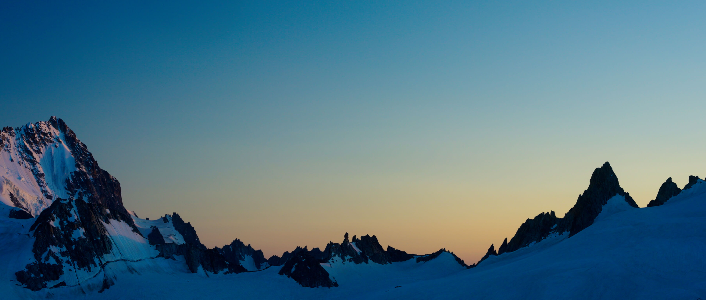
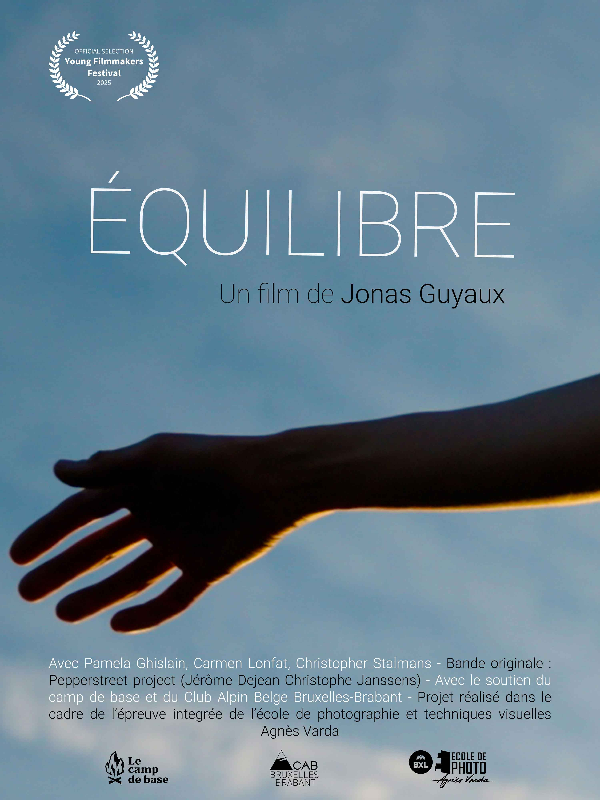
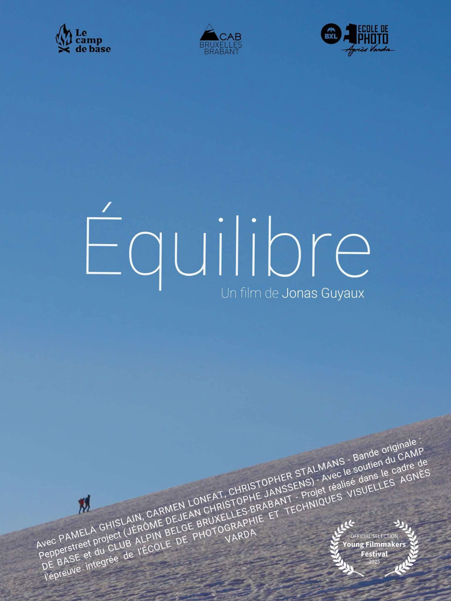